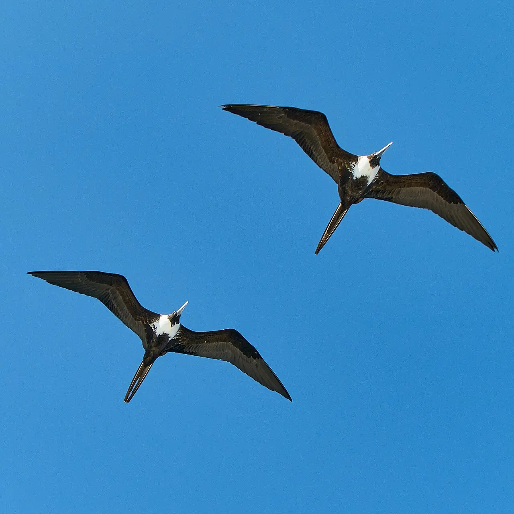
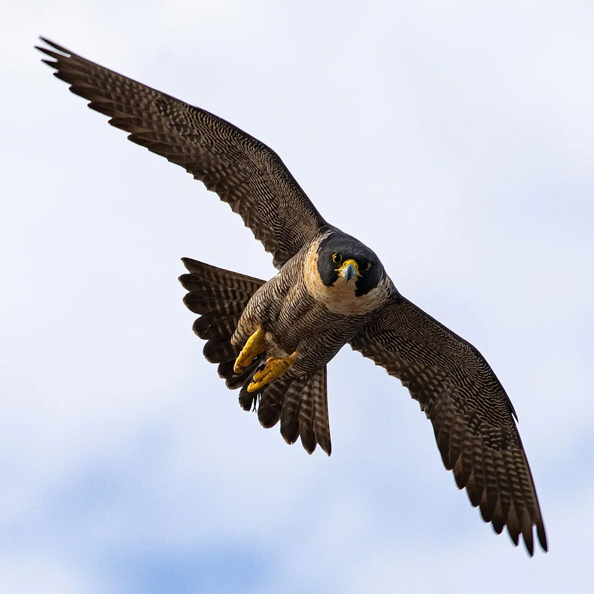

Módulo 3 Aula 12
Formas de asa
Olhe a silhueta de uma ave no céu e você já sabe muita coisa sobre o jeito de voar dela. O formato da asa é uma troca entre economia e manobra.
- O que é razão de aspecto e o que ela muda no voo
- Os quatro formatos clássicos de asa
- Como ler o formato da asa de uma ave em voo

Ave da aula
Fragata Fregata magnificens
Razão de aspecto
A é o comprimento da asa dividido pela largura. Aumentá-la traz uma troca: o voo de cruzeiro fica mais eficiente, com menos arrasto, mas a asa fica mais difícil de manobrar e a decolagem, mais difícil[1]. Mexa no controle e veja o efeito.
Modelo didático: as barras mostram apenas a tendência descrita nos estudos[1], sem valores reais.
Quatro formatos
Um resumo usado para ensinar o assunto separa as asas das aves em quatro tipos[2]. Cada um tem uma silhueta reconhecível.

Elíptica
Asa curta e arredondada. Dá arrancadas rápidas e boa manobra entre galhos, mas o ritmo não se mantém: a ave bate as asas com frequência[2]. É comum em muitas aves de mata e de jardim.

Carga alar
Outra medida que ajuda a explicar o voo é a : o peso dividido pela área das asas. Uma ave com carga alar alta precisa voar mais depressa e faz curvas mais abertas, o que pede correntes de ar quente maiores para ganhar altura[6]. Uma com carga alar baixa faz curvas fechadas e sobe mesmo em correntes fracas.
Palavras novas
Teste rápido
Sem nota. Se errar, tente de novo.
Uma asa longa e estreita, com razão de aspecto alta, é boa para:
Qual asa tem as penas das pontas separadas como dedos?
O que é carga alar?
Referências e leitura complementar
Onde conferir o que foi dito nesta aula. Os números entre colchetes no texto levam a estas fontes. Os links abrem em outra aba.
- Qualitative skeletal correlates of wing shape in extant birds (Aves: Neoaves)PubMed Central (artigo científico) · inglês · leitura complementarEstudo sobre formatos de asa e razão de aspecto.
- These Paper Airplanes Fly Like BirdsAudubon · inglêsOs quatro tipos de asa (elíptica, de alta velocidade, de planeio ativo e de planeio passivo) explicados com aviões de papel.
- Magnificent Frigatebird Life HistoryAll About Birds · Cornell Lab of Ornithology · inglês · leitura complementarVoo e comportamento da fragata.
- Peregrine Falcon OverviewAll About Birds · Cornell Lab of Ornithology · inglêsO falcão-peregrino e seu mergulho de caça.
- Multi-cored vortices support function of slotted wing tips of birds in gliding and flapping flightJournal of The Royal Society Interface · inglêsAs pontas de asa com “dedos” reduzem o arrasto.
- Thermal soaring flight of birds and unmanned aerial vehiclesarXiv (artigo científico) · inglês · leitura complementarArtigo sobre como aves planam em correntes de ar quente e o papel da carga alar.
- Falconiform – Flapping, Soaring, DivingEncyclopaedia Britannica · inglêsComo aves de rapina batem asas, planam e mergulham.
Os endereços foram abertos e conferidos em 29/09/2026. Alguns sites de revistas científicas e de órgãos oficiais exigem verificação humana e não puderam ser testados por robô. Sites externos podem mudar ou sair do ar.
Para levar
Em três frases
- Asas longas e estreitas gastam pouca energia para se manter no ar, mas manobram pior; asas curtas e largas fazem o contrário.
- Os quatro formatos clássicos são elíptica, de alta velocidade, de planeio ativo e de planeio passivo.
- A carga alar, peso dividido pela área da asa, também ajuda a explicar como cada ave voa.